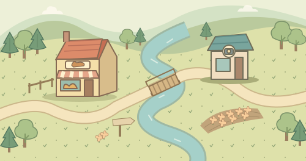

TAK&MEG / DICE RALLY
たくめぐすごろく
こもれび町 通信POST CARD

4匹でよーい、どん！
こもれび町レース
町めぐりコースVOL. 01
出発のしたく
みんながゴールしたら、たねで勝負！
道中でたねを集める？ 早くゴールしてボーナスをもらう？ サイコロを選んで町を3周しよう。
たね勝負全員ゴールで、たねが最多なら優勝！
ゴール順のたね
↻ 時計回りたね ＋1〜4個★ たね＋6／−3個
KOMOREBI TOWN / FINISH